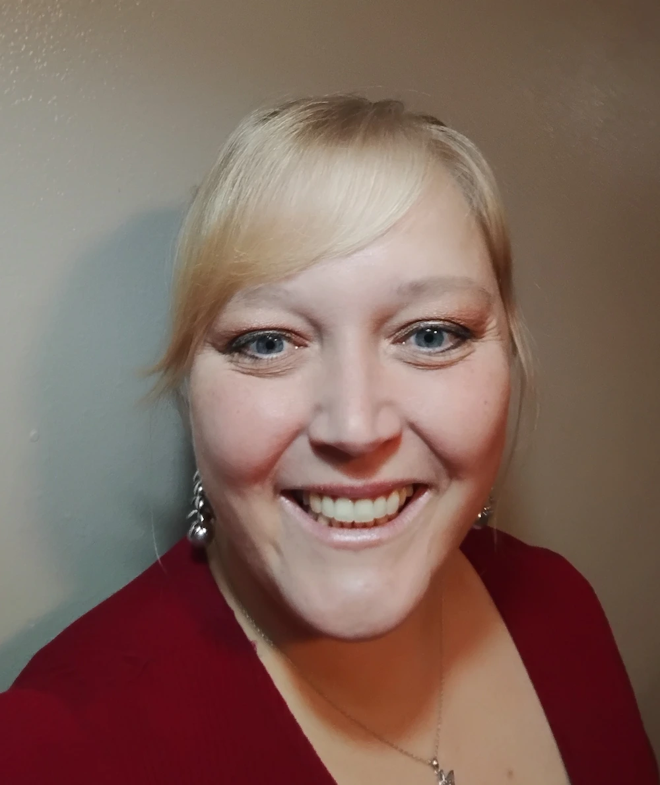

Brooke Grandberry | WDD 130
Hi! My name is Brooke Grandberry. I'm from Vernal, Utah. My two favorite things are my family and adventure! We spend as much time outdoors as possible. In the warmer months, we regularly participate in kayaking, fishing, swimming, scuba diving, hiking, and camping. I also enjoy learning new things, listening to audiobooks, getting crafty, and all things music.